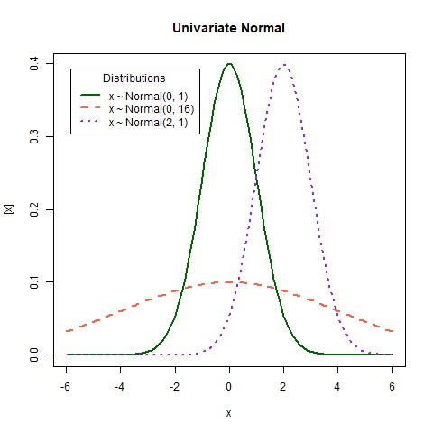
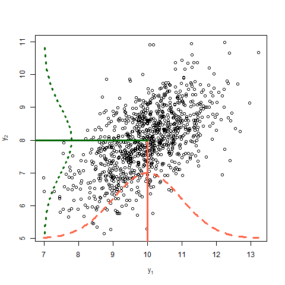
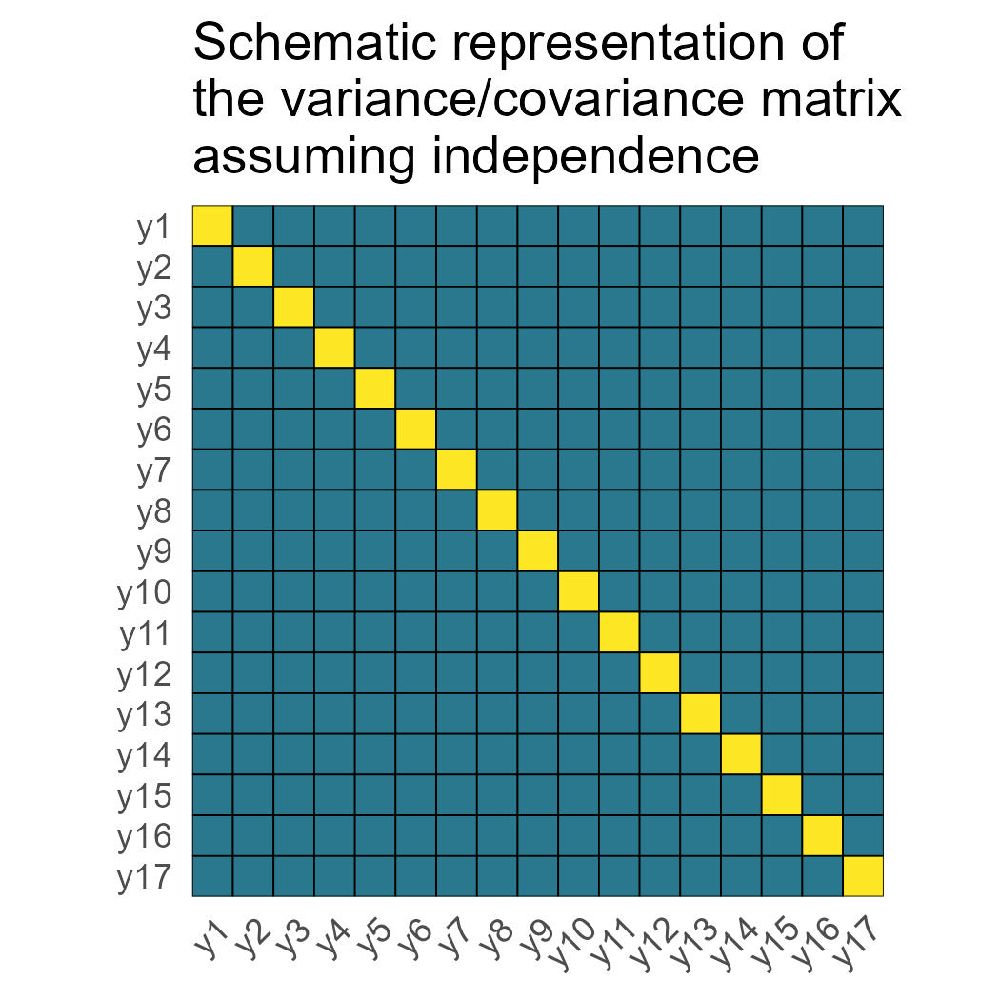
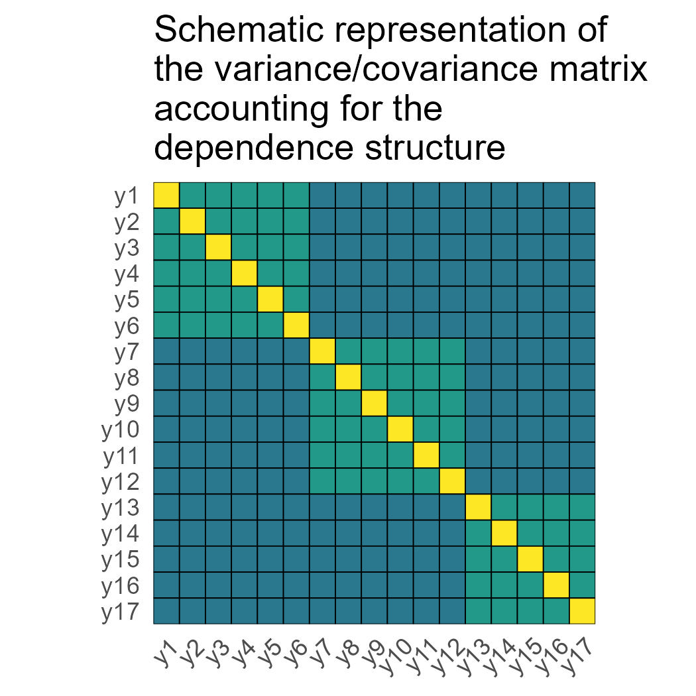
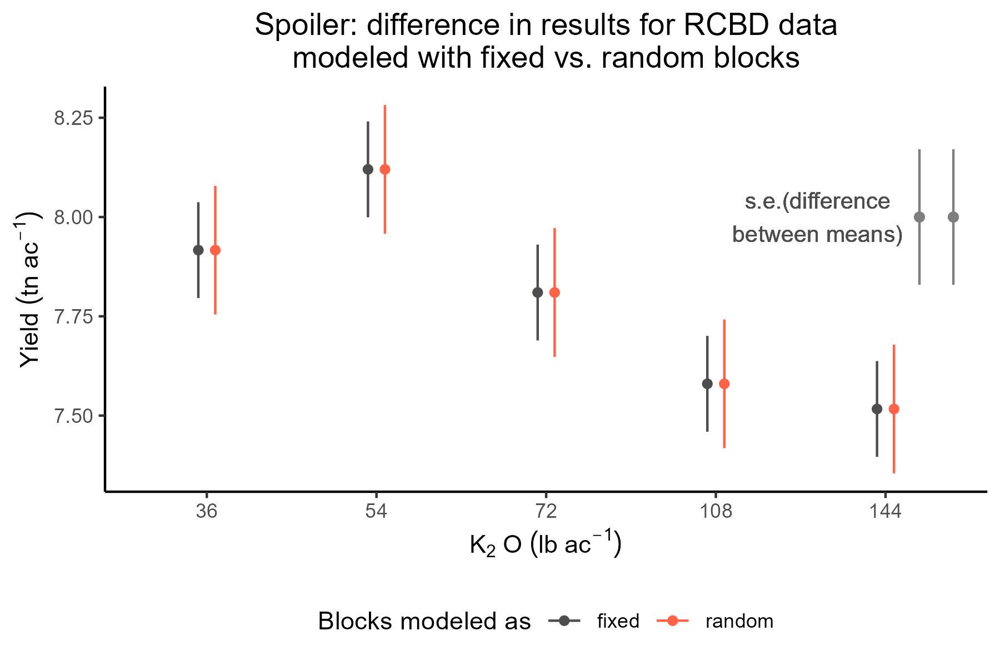
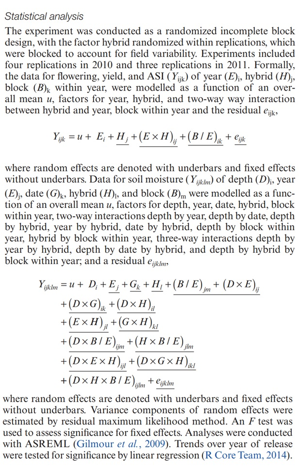
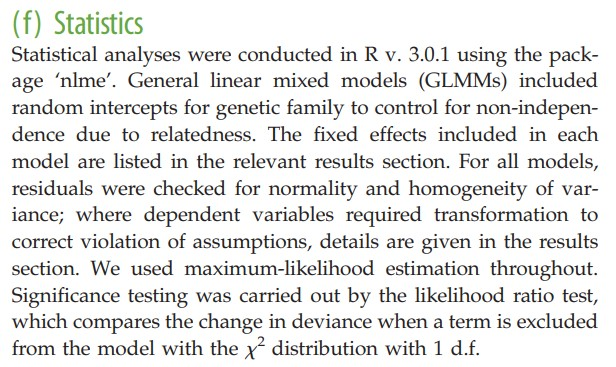

2 Día 1 (mañana): Introducción y repaso.
5 de octubre de 2026
2.1 Housekeeping
- We will have relatively low proportion of R code in this short course. Instead, we will focus on understanding of the components of mixed-effects models. Questions/concerns via e-mail are encouraged.
- Emphasis on modeling and figuring out what mixed-effects models actually do.
- The statistical notation we will use throughout this workshop is presented here.
- DON’T PANIC when you see all the math notation and matrices. We will go slowly together. It is also not expected that you walk out of this workshop as a math notation wizard!
2.2 Linear Models Review
Why do we need statistical models?
Statistics as a summary of the information available
“Funes el memorioso” (J.L. Borges): >Sospecho, sin embargo, que no era muy capaz de pensar. Pensar es olvidar diferencias, es generalizar, abstraer. En el abarrotado mundo de Funes no había sino detalles, casi inmediatos.
“Sobre el rigor en la ciencia” (también J.L. Borges): >En aquel Imperio, el Arte de la Cartografía logró tal Perfección que el mapa de una sola Provincia ocupaba toda una Ciudad, y el mapa del Imperio, toda una Provincia. Con el tiempo, estos Mapas Desmesurados no satisficieron y los Colegios de Cartógrafos levantaron un Mapa del Imperio, que tenía el tamaño del Imperio y coincidía puntualmente con él. > >Menos Adictas al Estudio de la Cartografía, las Generaciones Siguientes entendieron que ese dilatado Mapa era Inútil y no sin Impiedad lo entregaron a las Inclemencias del Sol y los Inviernos. En los desiertos del Oeste perduran despedazadas Ruinas del Mapa, habitadas por Animales y por Mendigos; en todo el País no hay otra reliquia de las Disciplinas Geográficas. > >Suárez Miranda, Viajes de Varones Prudentes, Libro Cuarto, Cap. XLV, Lérida, 1658. > >FIN
What is a statistical model?
Scientific models are, above all erlse, abstractions. They are statements about the operation of nature that purposefully omit many details and thus achieve insight that would otherwise be discursively obscured. They provide unambiguous statements of what we believe is important. A key principle in modeling and statistics – in science for that matter – is the need to reduce the dimensions of a problem. (Hooten and Hobbs, 2025)
- A statistical model combines deterministic components with stochastic components.
For example:
\[y_i \sim N(\mu_i, \sigma^2), \\ \mu_i = \beta_0 + \beta_1 x_i\]
2.2.1 General linear model
One of the most popular linear models is the intercept-and-slope model (sometimes also called linear regression), often used to describe the (linear) relationship between two quantitative variables. Quadratic regression is also a linear model, and it’s often used to describe relationship between two quantitative variables when it’s not exactly linear, but has some type of curvature.
Most of us learned a way of writing out the statistical model called “model equation form”. For a quantitative predictor \(x\), the model equation form is
\[y_{i} = \beta_0 + x_{i} \beta_1 + x_{i}^2 \beta_2 + \varepsilon_{i}, \\ \varepsilon_i \sim N(0, \sigma^2),\]
where \(y_{i}\) is the observed value for the \(i\)th observation, \(\beta_0\) is the intercept (i.e., the expected value of \(y\) when \(x=0\)), \(\beta_1\) is the linear component (i.e., the expected change in \(y_i\) with a unity increase in \(x\)), \(\beta_2\) is the quadratic component (i.e., the expected change in \(y_i\) with a unity increase in \(x^2\)), \(x_i\) is the predictor for the \(i\)th observation, and \(\varepsilon_{i}\) is the difference between the observed value \(y\) and the expected value \(E(y_i) = \beta_0+x_i\beta_1+ x_{i}^2 \beta_2\) - that’s why we often call it “residual”. Typically, \(\boldsymbol{\beta} \equiv \begin{bmatrix} \beta_0 \\ \beta_1 \\ \beta_2 \end{bmatrix}\) is estimated via maximum likelihood estimation. Also, when we assume a normal distribution, maximum likelihood estimation yields the same point estimates as least squares estimation.
2.2.2 Qualitative predictors
Instead of a quantitative predictor, we could have a qualitative (or categorical) predictor. Let the qualitative predictor have two possible levels, A and B. We could use the same model as before,
\[y_{i} \sim N(\mu_i, \sigma^2), \\ \mu_i = \beta_0 + x_i \beta_1,\]
and say that \(y_{i}\) is the observed value for the \(i\)th observation, \(\beta_0\) is the expected value for A, \(x_i = 0\) if the \(i\)th observation belongs to A, and \(x_i = 1\) if the \(i\)th observation belongs to B. That way, \(\beta_1\) is the difference between A and B.
If the categorical predictor has more than two levels,
\[y_{i} \sim N(\mu_i, \sigma^2), \\ \mu_i = \beta_0 + x_{1i} \beta_1 + x_{2i} \beta_2+ ... + x_{ji} \beta_j,\]
\(y_{i}\) is still the observed value for the \(i\)th observation, \(\beta_0\) is the expected value for A (sometimes in designed experiments this level is a control),
\[x_{1i} = \begin{cases} 1, & \text{if } \text{Treatment is B} \\ 0, & \text{if } \text{else} \end{cases}, \] \[x_{2i} = \begin{cases} 1, & \text{if } \text{Treatment is C} \\ 0, & \text{if } \text{else} \end{cases}, \] \[\dots,\]
\[x_{ji} = \begin{cases} 1, & \text{if } \text{Treatment is J} \\ 1, & \text{if } \text{else} \end{cases}. \]
That way, all \(\beta\)s are the differences between the treatment and the control.
2.2.3 Assumptions of the general linear model
Let’s review the assumptions we make in this model (which is the default model in most software).
- Linearity
- Constant variance
- Independence
- Normality
2.2.4 Let’s review that simple model using distribution notation and matrix notation
There are other ways of writing out the statistical model above besides the model equation form. Instead of focusing on the distribution of the residuals, we can focus on the distribution of the data \(y\):
\[y_{i} \sim N(\mu_i, \sigma^2), \\ \mu_i = \beta_0 + x_{i} \beta_1 + x_{i}^2 \beta_2.\]
This type of notation is called “probability distribution form”. The probability distribution form makes it easier to switch to other distributions beyond the Normal (generalized linear (mixed) models).
Quick review: random variables
Random variables
Random variables are usually described with their properties like the expected value and variance. The expected value and variance are the first and second central moments of a distribution, respectively. Regardless of the distribution of a random variable \(Y\), we could calculate its expected value \(E(Y)\) and variance \(Var(Y)\). The expected value measures the average outcome of \(Y\). The variance measures the dispersion of \(Y\), i.e. how far the possible outcomes are spread out from their average.
The formula for the expected value of any random variable \(Y\) is \[E(Y) = \sum_{i=1}^n{x_i\cdot P(x_i)}.\] The formula for the variance of any random variable \(Y\) is \[Var(Y) = E(Y^2) - E(Y)^2.\]

Discuss in the plot above:
- Expected value
- Variance
- Covariance?
On the covariance of two random variables \(y_1\) and \(y_2\)
Covariance between two random variables means how the two random variables behave relative to each other. Essentially, it quantifies the relationship between their joint variability. The variance of a random variable is the covariance of a random variable with itself. Consider two variables \(y_1\) and \(y_2\), each with a variance of 1 and a covariance of 0.6. The data shown below arise from the multivariate normal distribution, \[\begin{bmatrix}y_1 \\ y_2 \end{bmatrix} \sim MVN \left( \begin{bmatrix} 10 \\ 8 \end{bmatrix} , \begin{bmatrix}1 & 0.6 \\ 0.6 & 1 \end{bmatrix} \right),\] where the means of \(y_1\) and \(y_2\) are 10 and 8, respectively, and their covariance structure is represented in the variance-covariance matrix. Remember,
\[\begin{bmatrix}y_1 \\ y_2 \end{bmatrix} \sim MVN \left( \begin{bmatrix} E(y_1) \\ E(y_2) \end{bmatrix} , \begin{bmatrix} Var(y_1) & Cov(y_1, y_2) \\ Cov(y_2,y_2) & Var(y_2) \end{bmatrix} \right).\]

Discuss in the plot above:
- Expected value
- Variance
- Covariance
On the variance-covariance matrix:
The variance-covariance matrix contains information about the covariance between all data points in the model. Consider the variance covariance matrix is a \(n \times n\) square of tiles, where \(n\) is the total number of observations. Each tile contains the information about the correlation between the combination of tiles. For example:
- The tile at the intersection between the 1st and the 10th tile is \(cov(y_1, y_{10})\). In this case, \(cov(y_1, y_{10}) =0\).
- The tile at (1,1) is \(cov(y_1, y_{1}) = var(y_1) = \sigma^2\).
Recall that the single most common default model assumes independent residuals. This means that \(cov(y_i, y_{i'}) = 0\) for all \(i \neq i'\).

Mixed models relax the assumption of independent observations and affect the variance covariance matrix of the marginal distribution of \(y\). For example:
The tile at the intersection between the 1st and the 10th tile is \(cov(y_1, y_{10})\). In this case, \(cov(y_1, y_{10}) =0\).
The tile at the intersection between the 1st and the 4th tile is \(cov(y_1, y_{4})\). In this case, \(cov(y_1, y_{4}) \neq 0\).
The exact formula for the different \(cov(y_i, y_{i'})\) depends on the model assumptions.

2.2.5 Matrix notation
Now that we’ve covered the variance-covariance matrices, we can further express the general linear model using vectors and matrices:
\[\mathbf{y} \sim N(\boldsymbol{\mu}, \Sigma), \\ \boldsymbol{\mu} = \boldsymbol{1} \beta_0 + \mathbf{x} \beta_1 = \mathbf{X}\boldsymbol{\beta},\]
where \(n\) is the total number of observations, \(p\) is the total number of parameters, \(\mathbf{y}\) is an \(n \times 1\) vector containing all observations, \(\boldsymbol{\mu}\) is an \(n \times 1\) vector containing the expected values of said observations, \(\boldsymbol{\beta}\) is an \(p \times 1\) vector containing the (fixed) parameters, \(\mathbf{X}\) is an \(n \times p\) matrix containing the predictors, \(\Sigma\) is an \(n \times n\) matrix called variance-covariance matrix. Note: This type of notation is also convenient to think about how to prepare the data in your spreadsheet. One row per observation (rows in \(\mathbf{X}\)), one variable per column (columns in \(\mathbf{X}\)).
These expressions can be expanded into:
\[\begin{bmatrix}y_1 \\ y_2 \\ \vdots \\ y_n \end{bmatrix} \sim N \left( \begin{bmatrix}\mu_1 \\ \mu_2 \\ \vdots \\ \mu_n \end{bmatrix}, \begin{bmatrix} Cov(y_1, y_1) & Cov(y_1, y_2) & \dots & Cov(y_1, y_n) \\ Cov(y_2, y_1) & Cov(y_2, y_2) & \dots & Cov(y_2, y_n)\\ \vdots & \vdots & \ddots & \vdots \\ Cov(y_n, y_1) & Cov(y_n, y_2) & \dots & Cov(y_n, y_n) \end{bmatrix} \right),\]
which is the same as
\[\begin{bmatrix}y_1 \\ y_2 \\ \vdots \\ y_n \end{bmatrix} \sim N \left( \begin{bmatrix}\mu_1 \\ \mu_2 \\ \vdots \\ \mu_n \end{bmatrix}, \begin{bmatrix} Var(y_1) & Cov(y_1, y_2) & \dots & Cov(y_1, y_n) \\ Cov(y_2, y_1) & Var(y_2) & \dots & Cov(y_2, y_n)\\ \vdots & \vdots & \ddots & \vdots \\ Cov(y_n, y_1) & Cov(y_n, y_2) & \dots & Var(y_n) \end{bmatrix} \right).\]
So far, so good. In what follows, we will learn why and how the addition of random effects to a model affects the variance-covariance matrix. In particular, we will learn how it may make the covariance of the marginal distribution non-zero.
2.3 Fixed effects and random effects
The main characteristic of mixed is the combination of fixed effects and random effects.
What is behind a random effect:
We call random effects random because we assume a (stochastic, or random) probability distribution of the effects \(u_j\), namely \(u_j \sim \text{iid}(0, \sigma^2_u)\). This assumption represents the notion that these effects come from a larger population of effects, that can be represented with a probability distribution. The single most common assumption is that the distribution is actually \(u_j \overset{\mathrm{iid}}{\sim} N(0, \sigma^2_u)\).
A few questions to reflect on random effects:
- What process is being studied?
- How were the levels selected? (randomly, carefully selected)
- How many levels does the factor have, vs. how many did we observe?
- BLUEs versus BLUPs.
Read more in in Gelman (2005, page 20). “Analysis of variance—why it is more important than ever”. [link], and Gelman and Hill (2006), page 245
Gelman and Hill (2006) suggest replacing the traditional language of “fixed” and “random” for group-level effects and individual-level effects.
In-class activity: what determines if an effect should be random of fixed?
Case: scientists have decided they wanted to have 3 different environments (SE Prov. Buenos Aires, NW Prov. Buenos Aires, W Prov. Buenos Aires) for their experiments.
They design a randomized complete block design at each location.
However, they are not interested in studying the environments themselves.
How should they model the data generated by the experiment?
2.4 Marginal and conditional distributions
Mixed-effects models impose several modeling and inference decisions on the user. One of those decisions includes distinguishing conditional and marginal inference.
Marginal inference
- Consider the distribution for the population of random effects.
- Typically used when interested about a the greater population.
- \(y \sim N(\mathbf{X}\boldsymbol{\beta}, \sigma^2_u\mathbf{Z}\mathbf{Z}' +\mathbf{R})\).
Conditional inference
- Consider the distribution, given the value of a random effect.
- Typically used when interested about a single group of data.
- \(y \vert \boldsymbol{u} \sim N(\mathbf{X}\boldsymbol{\beta} + \mathbf{Z}\boldsymbol{u}, \mathbf{R})\).
2.5 Applied example
- Field experiment studying the effect of potassium on corn yield.
- One treatment factor: Potassium fertilizer (one-way treatment structure).
- Randomized Complete Block Design with 4 repetitions (design structure).

2.6 Building a statistical model
- What is the experiment blueprint? (aka design structure or structure in the data)
- What are the treatments?
We can easily come up with two models:
- Blocks fixed \(y_{ijk} = \mu + \tau_i + \rho_j + \varepsilon_{ijk}; \ \ \varepsilon_{ijk} \sim N(0, \sigma^2)\).
- Blocks random \(y_{ijk} = \mu + \tau_i + u_j + \varepsilon_{ijk}; \ \ u_j \sim N(0, \sigma^2_u); \ \ \varepsilon_{ijk} \sim N(0, \sigma^2)\), where \(u\) and \(\varepsilon\) are independent.
library(lme4)
library(tidyverse)
library(emmeans)
library(latex2exp)
df <- read.csv("../data/cochrancox_kfert.csv")
df$rep <- as.factor(df$rep)
df$K2O_lbac <- as.factor(df$K2O_lbac)
m_fixed <- lm(yield ~ K2O_lbac + rep, data = df)
m_random <- lmer(yield ~ K2O_lbac + (1|rep), data = df)
summary(m_fixed)##
## Call:
## lm(formula = yield ~ K2O_lbac + rep, data = df)
##
## Residuals:
## Min 1Q Median 3Q Max
## -0.251333 -0.127667 0.008667 0.105333 0.298667
##
## Coefficients:
## Estimate Std. Error t value Pr(>|t|)
## (Intercept) 7.78867 0.05397 144.325 5.94e-15 ***
## K2O_lbac1 0.12800 0.10793 1.186 0.2697
## K2O_lbac2 0.33133 0.10793 3.070 0.0154 *
## K2O_lbac3 0.02133 0.10793 0.198 0.8482
## K2O_lbac4 -0.20867 0.10793 -1.933 0.0893 .
## rep1 -0.15867 0.07632 -2.079 0.0712 .
## rep2 0.23733 0.07632 3.110 0.0145 *
## ---
## Signif. codes: 0 '***' 0.001 '**' 0.01 '*' 0.05 '.' 0.1 ' ' 1
##
## Residual standard error: 0.209 on 8 degrees of freedom
## Multiple R-squared: 0.7701, Adjusted R-squared: 0.5977
## F-statistic: 4.467 on 6 and 8 DF, p-value: 0.02795## Linear mixed model fit by REML ['lmerMod']
## Formula: yield ~ K2O_lbac + (1 | rep)
## Data: df
##
## REML criterion at convergence: 9
##
## Scaled residuals:
## Min 1Q Median 3Q Max
## -1.3538 -0.5733 0.1912 0.4075 1.3540
##
## Random effects:
## Groups Name Variance Std.Dev.
## rep (Intercept) 0.03511 0.1874
## Residual 0.04368 0.2090
## Number of obs: 15, groups: rep, 3
##
## Fixed effects:
## Estimate Std. Error t value
## (Intercept) 7.78867 0.12089 64.426
## K2O_lbac1 0.12800 0.10793 1.186
## K2O_lbac2 0.33133 0.10793 3.070
## K2O_lbac3 0.02133 0.10793 0.198
## K2O_lbac4 -0.20867 0.10793 -1.933
##
## Correlation of Fixed Effects:
## (Intr) K2O_l1 K2O_l2 K2O_l3
## K2O_lbac1 0.000
## K2O_lbac2 0.000 -0.250
## K2O_lbac3 0.000 -0.250 -0.250
## K2O_lbac4 0.000 -0.250 -0.250 -0.250## $emmeans
## K2O_lbac emmean SE df lower.CL upper.CL
## 36 7.92 0.121 8 7.64 8.19
## 54 8.12 0.121 8 7.84 8.40
## 72 7.81 0.121 8 7.53 8.09
## 108 7.58 0.121 8 7.30 7.86
## 144 7.52 0.121 8 7.24 7.79
##
## Results are averaged over the levels of: rep
## Confidence level used: 0.95
##
## $contrasts
## contrast estimate SE df t.ratio p.value
## c(1, 0, 0, 0, -1) 0.4 0.171 8 2.344 0.0471
##
## Results are averaged over the levels of: rep2.7 Discussions
Now we know what we mean when we say “factor A was considered fixed and factor B was considered random”!
Group discussion:
Example 1: A study to find out if water capture increased as the result of selection for yield in SX hybrids in the US corn-belt (Reyes et al., 2015). [link]

Example 2: A study to find out if developmental telomere attrition is a measure of state in birds, and hence should predict state-dependent decisions such as the relative value assigned to immediate versus delayed food rewards (Bateson et al., 2014). [link]

2.8 Summary
| Fixed effects | Random effects | |
|---|---|---|
| Where in the marginal distribution | Expected value | Variance-covariance matrix |
| Inference | Constant for all groups in the population of study | Differ from group to group |
| Usually used to model | Carefully selected treatments or genotypes | The study design (aka structure in the data, or what is similar to what) |
| Estimation | \(\hat{\boldsymbol{\beta}} \sim N \left( \boldsymbol{\beta}, (\mathbf{X}^T \mathbf{V}^{-1} \mathbf{X})^{-1} \right)\) | \(u_j \sim N(0, \sigma^2_u)\) |
| Method of estimation | Maximum likelihood, least squares. BLUEs. | Restricted maximum likelihood (shrinkage). BLUPs |